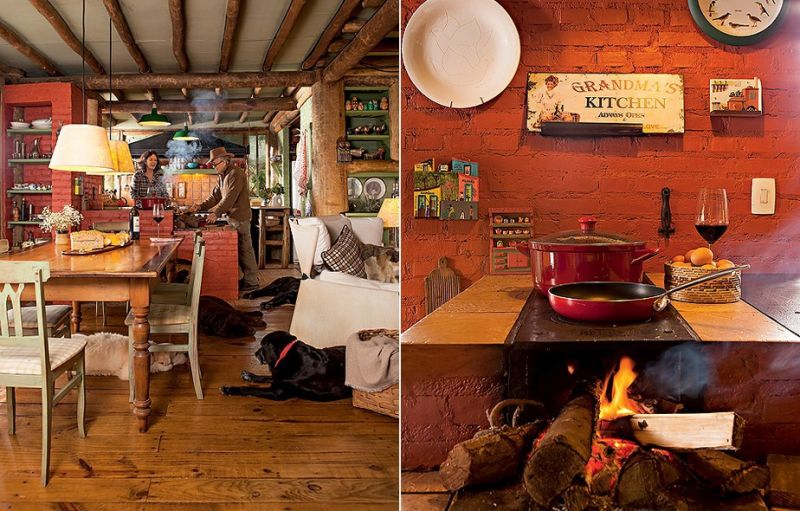
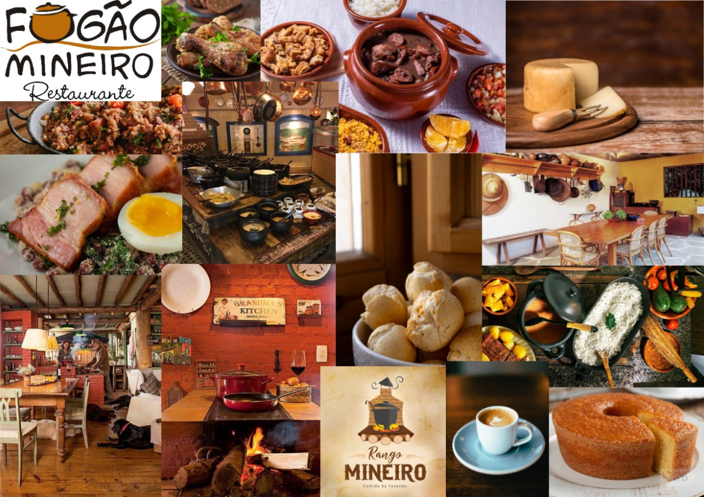
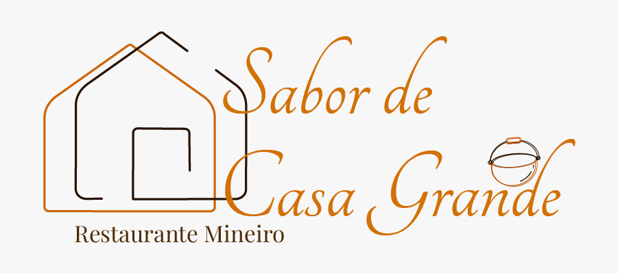

Logotipo - Restaurante de Cozinha Mineira
O Projeto
De acordo com alguns procedimentos (coleta, construção, eleição, expansão, conexão e apresentação) que serão descritos mais à frente, foi desenvolvido um Mood Board para solucionar um problema. Neste caso, o problema em questão é o desenvolvimento de um logotipo de um restaurante fictício de cozinha mineira.
Desenvolvimento
Fase 1: Coleta
De acordo com alguns procedimentos (coleta, construção, eleição, expansão, conexão e apresentação) que serão descritos mais à frente, foi desenvolvido um Mood Board para solucionar um problema. Neste caso, o problema em questão é o desenvolvimento de um logotipo de um restaurante fictício de cozinha mineira.
Esta fase também pode ser conhecida como Brainstorming ou, em tradução literal, “tempestade de ideias”
No caso, foi selecionado como tema um a criação de um logotipo de um restaurante de cozinha mineira. Foram coletadas várias imagens com base na culinária mineira, ambientes e até logotipos de restaurantes reais para serem usados como inspiração para o Mood Board.
Fonte: Coisa de Boteco
Fase 2: Eleição
Foram selecionadas as imagens que mais teriam capacidade de ajudar a solucionar o problema da criação de logotipo do restaurante.

Fonte: Freepik
Fase 3: Conexão
Escolhidas as referências, foram conectadas aquelas que, juntas, podem tornar visível o direcionamento criativo desejado.
Foram escolhidas imagens de cozinhas mineiras, panelas, pratos típicos, forno a lenha e até alguns logo tipos para se inspirar. Com essas escolhas, foi possível notar a predominância de uma certa paleta de cores, com tons quentes, como amarelo, laranja, vermelho e marrom. Existe também uma repetição de elementos, como a panela de barro ou o forno a lenha, que são marcas quase registradas desse tipo de culinária, que podem e devem ser muito bem explorados na criação do logotipo.

Fonte: Trip Advisor
Fase 4: Construção
Nessa etapa, foi construído o Mood Board no software gratuito, Miro.
Para construí-lo, foram estudados alguns parâmetros que serviram de base para a construção do Mood Board e posteriormente, de um conceito.
A ideia: Um logotipo para um restaurante
Forma: a forma, que poderia vir de inspiração com os objetos da cozinha como a panela de barro ou o forno a lenha
Função: a função do produto seria alimentação, portanto deveria ser um logotipo que desperte a curiosidade na culinária mineira e atraia o público.
Propósito: deve atrair o público e passar a mensagem de aconchego e caseira, que a culinária mineira tem.
Benefícios: uma boa culinária, gostosa e nutritiva, com jeito de comida de vó.
Conceito: Passar a ideia do aconchego e do sabor da culinária mineira a partir do logotipo.
Fase 5: Apresentação do Mood Board
O Logotipo
O logotipo abaixo foi desenvolvido no Adobe Illustrator, com as bases do Mood Board criado anteriormente. É possível notar referências nas cores, quentes, como laranja e marrom, que simbolizam essa questão de aconchego e sabor da comida mineira. As Tipografias Tangerine (titulo) e Playfair (subtítulo), dão esse toque de cuidado, carinho e aconchego que a marca exige. As ilustrações, como a casa e a panela, dão a temática. Referências estas, todas observadas no Mood Board.
Conclusão
Com a execução desta atividade, pode-se analisar o quanto é importante a criação de um Mood Board na área de design, principalmente para o desenvolvimento de um logotipo de uma marca, como exemplicado neste relatório, onde é possível notar como o Mood Board dá o tom do resultado final, facilitando todo o seu desenvolvimento.